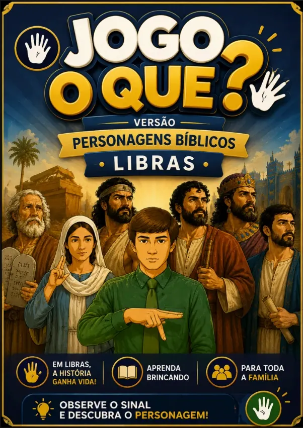

Escolha e imprima
Materiais em PDF para montar sua atividade conforme o tema do encontro.
Histórias, orações e atividades visuais para aproximar crianças surdas e ouvintes.

Acesso digital após a confirmação do pagamento · Garantia de 7 dias
CONHEÇA O MATERIAL
Uma coleção de cards, cartazes e jogos para preparar aulas, encontros e momentos de aprendizado em família.

PDF para consultar no celular e imprimir em casa ou na gráfica.
NA ROTINA DE QUEM ENSINA
Escolha o tema, separe os materiais e prepare uma atividade com apoio visual. Os cards ajudam a apresentar mensagens cristãs e a abrir espaço para a participação das crianças.
Materiais em PDF para montar sua atividade conforme o tema do encontro.
Recursos sobre mensagens cristãs, personagens bíblicos e momentos de oração.
Jogos e propostas visuais para trabalhar com crianças surdas e ouvintes.
DENTRO DO ACERVO
Mensagens de fé e recursos visuais para abordar os temas com as crianças.
Associação, desafios e personagens para trabalhar o conteúdo em grupo.
Folhas para preparar momentos de aprendizado na igreja ou em casa.
Mensagens ilustradas para acompanhar os encontros e a rotina.
Recursos extras incluídos no plano completo para ampliar as atividades.
Um acervo para professores, famílias e equipes que querem preparar momentos de fé com mais recursos visuais.
Selecione histórias e atividades para os encontros com as crianças.
Use os recursos como apoio visual no planejamento das atividades.
Crie momentos para conversar sobre a fé e brincar junto.
UMA OLHADA POR DENTRO
Veja a apresentação de jogos e cards sobre histórias e personagens bíblicos.
EXTRAS DO PLANO COMPLETO
O kit completo reúne os cards e quatro grupos de materiais complementares.
01 · MOMENTOS DE FÉ
Apoio visual em Libras para preparar momentos de oração com as crianças.
02 · MENSAGENS PARA COMPARTILHAR
Materiais para imprimir e utilizar como apoio nas aulas, encontros e atividades.
03 · PARTICIPAÇÃO EM GRUPO
Ideias de atividades para abordar histórias e ensinamentos com participação das crianças.
04 · APRENDER BRINCANDO
Propostas para reconhecer personagens, conversar sobre as histórias e revisar o que foi trabalhado.
Ter materiais organizados facilita a escolha do tema e das atividades.
LIBRAS COM CRISTO
ESSENCIAL

Uma seleção para começar suas atividades.
PAGAMENTO ÚNICO
R$ 10,00
Garantia de 7 dias
ACERVO + EXTRAS

Todos os cards e os materiais complementares.
PAGAMENTO ÚNICO
R$ 27,90
LIBRAS COM CRISTO
Uma proposta para apoiar professores, famílias e equipes de ministério infantil na preparação de atividades cristãs. Escolha os materiais de acordo com a idade, o tema e as necessidades do grupo.
Para professores, famílias e equipes que utilizam atividades cristãs com crianças. Selecione os recursos conforme o tema, a idade e as necessidades do grupo.
Não. São recursos visuais de apoio para atividades cristãs. Eles complementam o ensino e a comunicação, sem substituir a formação em Libras ou a mediação de um profissional.
Após a confirmação do pagamento, as informações de acesso são enviadas para o e-mail informado na compra. O material é digital; nenhum produto físico será enviado.
Sim. Você pode baixar os PDFs e imprimir os materiais que pretende utilizar em casa ou em uma gráfica.
O essencial reúne 100 cards. O completo inclui mais de 300 cards e os recursos adicionais de jogos, cartazes, orações e dinâmicas.
Você tem 7 dias a partir da compra para solicitar o reembolso, conforme as instruções da plataforma de pagamento.
Se o conteúdo não atender às suas expectativas, solicite o reembolso dentro do prazo de garantia.
Conheça os cards e escolha a opção que combina com suas atividades.
VER AS OPÇÕES DO KITMaterial digital · Pagamento único · Garantia de 7 dias